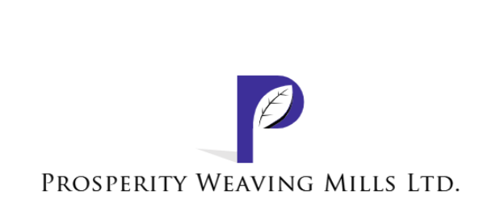
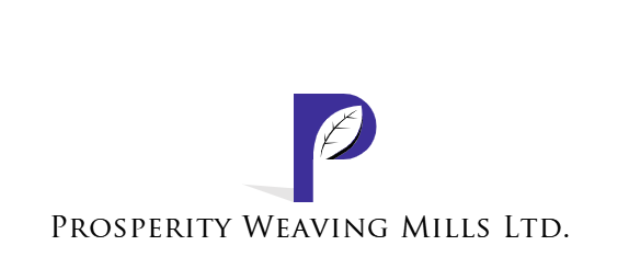
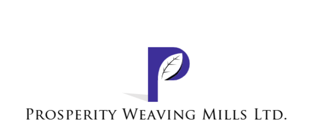

The mission of company is to operate state of the art spinning machinery
capable of producing high quality carded and combed, cotton, core spun and
blended yarn for knitting and weaving.

News & Updates
As an initiative of Nagina Group for better environment and a sign of
technological adoption. Nagina Group has installed one megawatt Solar
System at its Weaving Production company “Prosperity Weaving Mills
Limited” for
Organic Cottons Certification
September 2020
Latest
Going sustainable with new Join Life initiative

 
